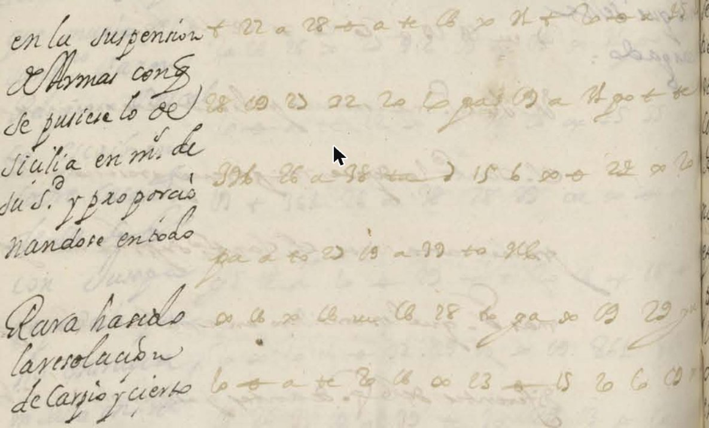

At a glanceKey from adjacent plaintext · partial (86% of the cipher)
- The letter
- Pascual de Aragón, cardinal and archbishop of Toledo, to his brother Pedro Antonio de Aragón (“D. Pedro mi S.r”). The part transcribed carries no date; its content points to 1676–1677.
- Where
- Biblioteca Nacional de España, Mss/2043 (formerly G. 85; BNE Digital, BDH bdh0000042925), PDF view 0496, left and right pages. There is no DECODE record and no edition.
- The cipher
- A mixed syllabic cipher, called S1 here: numbers of one or two digits for letters and syllables, letter-shaped signs read with a shifted consonant (te = de, ga = la), a few simple signs, some nulls and a sign for V.E.
- How it was deciphered
- The key was learned by EM alignment on 14 cipher and clear pairs from the same volume, frozen by hash, and measured once on this page: 0.742 of characters against 0.422 for the best of 200 shuffled keys. That clears the control but not the 0.85 threshold set in advance, so the key is partial.
- What it says
- The suspension of arms by which “lo de Sicilia” would be put in the Pope’s hands; orders to Your Excellency “as they stand” at Melgar; the writer fears Medina and the conferences of Oropesa; Valencia is “still very entrenched”.
- Still open
- 13 of 95 margin words are restored from the margin, not given by the key, and six cipher stretches have no counterpart. The page was deciphered at the time, so no solution is claimed.
- Credit
- Brice Dudout (Europe chiffrée, with Claude Opus 5.5 agents) found the volume, transcribed the page, learned and tested the key and read it; his result reached the repository as pull request #276. The decipherment in the margin is the work of a contemporary hand.
01 The page and the volume
Mss/2043 holds the letters of Cardinal Pascual de Aragón, archbishop of Toledo, to his brother Pedro Antonio de Aragón, 1675–1677, among the Aragón and Villahermosa papers. About 90 to 110 pieces are in one mixed syllabic cipher. Several carry a contemporary decipherment in the margin, and a separate gathering, “Descifrado de las cartas…” (about f. 353), holds clear copies of about fifty letters.
This write-up covers a single page: PDF view 0496, left and right pages (about f. 493), with 20 cipher lines of 273 signs. View numbers are image ranks in the PDF, not folios. The facing margin carries the decipherment of the time, which is what the key was measured against. The cipher lines on the left page sit under two short lines of that clear.

02 The system and its key
S1 mixes several kinds of sign. Numbers of one or two digits stand for letters and syllables (13 e, 16 a, 15 y, 25 que, 22 se, 21 pa, 26–30 sa to su, 31–35 ma to mu, 36–40 ta to tu). Letter-shaped signs read with a shifted consonant (te = de, ga = la, po and go = no, pa = na, ca = ua). Simple signs give single letters (a = n, + = s, x = r, ø = o, a+ = l, r = u, ue = h, ) = d). A few three-digit numbers and some nulls (916, 296, 316, 331) complete it, and 281 stands for V.E.
The key, CLE_C08c, is the last of a series. It was learned by EM alignment on 14 cipher and clear pairs of the same volume: the margins of views 0138–0139 and 0484–0485, and ten letters of views 0318–0355 paired with the “Descifrado” gathering. It was frozen by SHA-256 before p. 0496 was opened. Brice Dudout settled the confusable sign shapes on blind plates, choosing the shape he saw with no values or words shown: three forms of one family (crozier 20 = c, compact 10 = i, round 6 = p), a U-shaped tracing that is one sign with 21 (= pa), and one occurrence on view 0344 that is 28 (= si). The full key is in the repository (key.tsv).
03 The test on one page
The test used one held-out page, opened only after the key was frozen. The cipher was transcribed and hashed before its margin was looked at. The score is the longest common subsequence between the decryption and the margin clear, set against the best of 200 shuffled keys.
- Run 2, the official result: 0.742 against 0.422 (margin +0.320); the second control, the share of letters covered by Spanish words of five letters or more, gave 0.281 against 0.186. Margin met, absolute threshold of 0.85 missed: partial.
- Run 1 gave 0.392 against 0.344 and failed. The measuring script skipped “#” note lines in the cipher file but not in the clear file, and 7 of our own note lines were scored as clear. Run 2 was agreed before it was launched, declared as the official result with no third run, and changed only those 7 lines. Both runs are in
validation.txt. - An earlier key (CLE_C06), measured once on p. 0504 left, gave 0.778 against 0.424: partial as well.
04 The reading
The decryption was cut into words and read against the margin. In the text below, square brackets mark letters restored from the margin clear, round brackets mark letters corrected from one sign, and [..] marks letters neither decoded nor in the margin.
Left page. [en la su]spension de (a)r(m)as [con que] se (pu)siese [lo de] s(i)cilia en (m)anos de [su] santid(a)d y proporc[io]nando se en todo (pa)ra [hando ?] la reso[luc]ion de car(pi)o y c[ierto]
Right page. [de ahi no] se [..]uian las (h)orde(ne)s [..] V.E. q(u)al se halla[n] [a] Melgar y en [el c]laro es Medelli[n] [yo] [con]fieso que q(u)anto me(n)os cor(r)esponden [es] con el; es el mejor esta(do); temo a Medina, que el no (c)ontentarse juzgo le tiene en este estado, y las (c)onferen(c)ias de Oro(p)esa y el no se [qu]e efec[tos] [pue]den pro[du]c[ir]; y Valen[cia] [se] deue de ha[llar] [mui] encastillad[o a]u[n]
In English: “In the suspension of arms, whereby the Sicily affair would be placed in the hands of His Holiness, and accommodating oneself in everything, for [—] the resolution of Carpio and [certain…] … the orders are sent to Your Excellency as they stand at Melgar; and what is clear is Medellín. I confess that the less they correspond with him, the better the state of things. I fear Medina, whom discontent, I judge, keeps in this state; and the conferences of Oropesa, and I do not know what effects they may produce; and Valencia must still be very entrenched.” Gaps are marked in the full translation below.
The suspension of arms and Sicily fit the Messina war of 1674–1678, and Carpio, Medellín, Medina, Oropesa and Melgar are Spanish grandees or titles of the court of Charles II. We do not identify the individuals.
The count. Of the 95 words of the margin clear, 41 are certain (every letter aligned with the decryption), 41 probable (at least half of the letters aligned, including “suspension de armas”, which the head cut of the measurement leaves out although the decryption has it), and 13 restored (under half aligned). That makes 82 of 95, or 86% without the restored words, under the 95% bar, so the extent is partial. The count was made by script on the alignment of the official measurement.
Where the cipher corrects the margin. The margin was checked again after the measurement, without re-running it. Three places give the better reading to the cipher: the margin’s “burgo” is juzgo (“juzgo le tiene en este estado”), its “mel ar” is Melgar, and its “tado”, twice, is estado. At line 13 of the right page the decryption has “ualenzuela” where the margin has “valencia”, and the adjective is masculine (“encastillado”). It may be Fernando de Valenzuela, the queen mother’s favourite, who took refuge in the Escorial at the turn of 1676–1677. That is a hypothesis only: it is not counted and it does not date the letter.
05 What remains uncertain
- 13 margin words are restored, not given by the key: “en”, “la”, “con” at the head, “que” (three times), “lo”, “hando”, “cierto”, “ahi”, “se” (twice) and “mui”.
- Six cipher stretches have no counterpart in the margin: tararahasii, hsmir, enne, eyseco, prohcp and lapide.
- The transcription is less secure than the training pieces: pale ink and crossing interlinear writing give 7 doubtful signs (as A|B) and 3 illegible ones. The margin on the right page is partly cut by the binding.
- The key is partial by our protocol (0.742, under 0.85), and no held-out page with a clear is left for a new test.
- One reader only, an AI agent, did the transcription and the reading. Brice Dudout answered the shape plates, not the reading, and no palaeographer has checked either.
- A glimpse of the margin before the hash: the first overview strip of the left page showed the right edge of the margin clear, a few word endings, before the cipher was hashed.
- Not part of this reading: the interlinear clear on the right page, which was left unread so that the test stayed clean, the other pieces of S1 in the volume, and the date and the persons behind Carpio, Medina, Oropesa and Valencia.
Full texts
The transcription and the decryption of every document on this page, so that the reading can be used and checked. Short files are shown here; all are in the repository.
PDF view 0496, left and right pages: cipher with its contemporary margin read in part
On the suspension of arms by which the Sicily affair would be put in the Pope's hands, and the resolution of Carpio; the orders to Your Excellency as they stand at Melgar; Medellín; the writer fears Medina, kept in this state by discontent, and the conferences of Oropesa; Valencia (or Valenzuela) is still very entrenched.
Builds coherent sentences, but under the read bar of 95% of words read as sense (86% here); the holes are marked in the reading.
Transcription
# BNE Mss/2043 (BNE Digital), PDF view 0496, left and right pages (about f. 493): cipher column only, read 5 Nov 2026 after key CLE_C08c was frozen. # Hashed before the margin clear was looked at (SHA-256 075594d482646f5c9799c9f16d333304977265139a5cf6a7b0d1d28f477bdbc5, same token lines). # One token per sign, space separated. A|B = doubtful reading (A main, the only one decoded). ? = illegible sign. Ligatures read by the rules in NOTES.md. # Left page: 6 cipher lines under 2 lines of clear (not transcribed); end of line 1 faded. Right page: 14 lines; the interlinear clear was not read. # Pale ink and crossing interlinear writing: a less secure transcription than the training pieces. # p. 0496 left + 22 a 28 ø a te 13 x 21 + ? 28 13 22 22 20 10 ga + 13 a 21 go + te 916 26 a 38 te ) 15 6 x ø 24|22 x 20 pa a to 22 13 a 39|33 to 36 x 16 x 16 ue 16 28 10 ga x 13 29 10 ø a te 20 16 x 13|23 ø 15 20 6|10 13 # p. 0496 right 22 13 a ci 16 a ga + ø x te ue|x + 33 x 13 281 2 a 16 a+ 22 ue 16 a+ ga 32 a+ 12 16 x 15 13 a pe x 16 x ø 13 + 32 te a+ gi ce 13 15 22 20 ø ? 13 29 25 2 a 16 a 39 32 go + 20 ø x 13 + 22 a te a 20 6 16 20 ø a 13 a+ 13 + 13 a+ 32 11 ø x 13 + 36 16 37 22 16 32 ti pa 25 13 a+ go 6 ø a 22|37 a 36 x 22 ue 11 r 18 12 ø ge + 38 13 ge 13 a 13 + 37 13 + 36 to 15 ga + 10 ø a de x 13 a 10|13 10 16 + te ø x ø 22 26 15 13 a+ go 22 ? 13 de 20 32 + 25 13 te a 6 x ø ue 20 6 15 ca ge a 18 r 13 ga 23 te ce te ue 16 a x 25 15 13 a 20 16 + 38 a+ ga te 16 r
Decryption
# Decryption of transcription.txt with key.tsv (CLE_C08c), line by line, without any correction. "?" = illegible sign; nulls give nothing.
# Each line: line number, tokens, then token=value pairs, then the decoded letters.
# p. 0496 left
L01 +=s 22=se a=n 28=si ø=o a=n te=de 13=e x=r 21=pa +=s ?=?
ssensiondeerpas?
L02 28=si 13=e 22=se 22=se 20=c 10=i ga=la +=s 13=e a=n 21=pa go=no +=s te=de
siesesecilasenpanosde
L03 916=- 26=sa a=n 38=ti te=de )=d 15=y 6=p x=r ø=o 24|22=po x=r 20=c
santidedyproporc
L04 pa=na a=n to=do 22=se 13=e a=n 39|33=to to=do 36=ta
nandoseentodota
L05 x=r 16=a x=r 16=a ue=h 16=a 28=si 10=i ga=la x=r 13=e 29=so
rarahasiilareso
L06 10=i ø=o a=n te=de 20=c 16=a x=r 13|23=e ø=o 15=y 20=c 6|10=p 13=e
iondecareoycpe
# p. 0496 right
R01 22=se 13=e a=n ci=ui 16=a a=n ga=la +=s ø=o x=r te=de ue|x=h +=s 33=mi x=r
seenuianlasordehsmir
R02 13=e 281=ue 2=q a=n 16=a a+=l 22=se ue=h 16=a a+=l ga=la
eueqnalsehalla
R03 32=me a+=l 12=g 16=a x=r 15=y 13=e a=n pe=ne
melgaryenne
R04 x=r 16=a x=r ø=o 13=e +=s 32=me te=de a+=l gi=li ce=ue 13=e 15=y 22=se 20=c ø=o
raroesmedelliueeyseco
R05 ?=? 13=e 29=so 25=que 2=q a=n 16=a a=n 39=to 32=me go=no +=s 20=c ø=o x=r
?esoqueqnantomenoscor
R06 13=e +=s 22=se a=n te=de a=n 20=c 6=p 16=a 20=c ø=o a=n 13=e a+=l
essendencpaconel
R07 13=e +=s 13=e a+=l 32=me 11=j ø=o x=r 13=e +=s 36=ta 16=a 37=te 22=se
eselmejorestaatese
R08 16=a 32=me ti=di pa=na 25=que 13=e a+=l go=no 6=p ø=o a=n 22|37=se a=n 36=ta x=r 22=se
amedinaqueelnoponsentarse
R09 ue=h 11=j r=u 18=z 12=g ø=o ge=le +=s 38=ti 13=e ge=le 13=e a=n 13=e +=s
hjuzgolestieleenes
R10 37=te 13=e +=s 36=ta to=do 15=y ga=la +=s 10=i ø=o a=n de=fe x=r 13=e a=n 10|13=i
teestadoylasionfereni
R11 10=i 16=a +=s te=de ø=o x=r ø=o 22=se 26=sa 15=y 13=e a+=l go=no 22=se ?=?
iasdeorosesayelnose?
R12 13=e de=fe 20=c 32=me +=s 25=que 13=e te=de a=n 6=p x=r ø=o ue=h 20=c 6=p
efecmesqueedenprohcp
R13 15=y ca=ua ge=le a=n 18=z r=u 13=e ga=la 23=pi te=de ce=ue te=de ue=h 16=a a=n
yualenzuelapideuedehan
R14 x=r 25=que 15=y 13=e a=n 20=c 16=a +=s 38=ti a+=l ga=la te=de 16=a r=u
rqueyencastilladeauReading
# aragon1676 — reading of BNE Mss/2043, PDF view 0496 (left and right pages)
Read in part (5 Nov 2026): 95 words of the contemporary margin clear, 41 certain, 41 probable, 13 restored = **86% without the restored words** (under 95%).
Conventions: the text is the decryption of `transcription.txt` with `key.tsv`, cut into words and normalised.
`[ ]` = letters restored from the contemporary margin clear (not given by the key); `( )` = letters corrected from one sign
(a sign the key decodes wrongly, read by sense and by the margin); `[..]` = letters neither decoded nor in the margin.
The raw decryption is in `decryption.txt`; nothing in it was changed after the measurement.
## Left page (6 cipher lines)
[en la su]spension de (a)r(m)as [con que] se (pu)siese [lo de] s(i)cilia en (m)anos de [su] santid(a)d y proporc[io]nando se
en todo (pa)ra [hando ?] la reso[luc]ion de car(pi)o y c[ierto]
## Right page (14 cipher lines)
[de ahi no] se [..]uian las (h)orde(ne)s [..] V.E. q(u)al se halla[n] [a] Melgar y en [el c]laro es Medelli[n] [yo] [con]fieso
que q(u)anto me(n)os cor(r)esponden [es] con el; es el mejor esta(do); temo a Medina, que el no (c)ontentarse juzgo le tiene en
este estado, y las (c)onferen(c)ias de Oro(p)esa y el no se [qu]e efec[tos] [pue]den pro[du]c[ir]; y Valen[cia] [se] deue de
ha[llar] [mui] encastillad[o a]u[n]
## Word count (95 words of the margin clear)
Counted by script on the character alignment of the official measurement (`validation.txt`), one class per margin word:
| class | words | rule |
|---|---|---|
| certain | 41 | every letter of the word aligned with the decryption |
| probable | 41 | at least half of the letters aligned (includes "suspension de armas", cut off by the head cut t = 24 of the measurement but present in the decryption) |
| restored | 13 | under half aligned: "en", "la", "con" at the head; "que" (3), "lo", "hando", "cierto", "ahi", "se" (2), "mui" |
| unresolved | - | cipher stretches with no counterpart in the margin: "tararahasii", "hsmir", "enne", "eyseco", "prohcp", "lapide" |
Certain + probable = 82 of 95 = 86%.
## Where the cipher corrects the margin
The margin clear was read again after the measurement, without re-running it. In three places the decryption gives the
better reading of a damaged or misread margin word:
- margin "burgo" -> cipher **juzgo** ("juzgo le tiene en este estado");
- margin "mel ar" (letter lost) -> cipher **Melgar**;
- margin "tado" (start lost in the binding, twice) -> cipher **estado**.Translation
# aragon1676 — English translation of the reading of p. 0496
Translated from `reading.md` (sense of the reading; restored passages in square brackets, gaps as [—]). Read in part: 86% of the words without restorations.
**Left page.** "[In the] suspension of arms, [whereby] the [Sicily affair] would be placed in the hands of His Holiness, and
accommodating oneself in everything, for [—] the resolution of Carpio and [certain…]"
**Right page.** "… [from there] the orders are [sent] [to] Your Excellency as they stand [at] Melgar; and what is clear is
Medellín. I confess that the less they correspond with him, the better the state of things. I fear Medina, whom discontent,
I judge, keeps in this state; and the conferences of Oropesa, and I do not know what effects they may produce; and Valencia
must still be very entrenched."
Notes. "Su Santidad" is the Pope; the suspension of arms and Sicily fit the Messina war (1674-1678). Carpio, Medellín,
Medina, Oropesa and Melgar are Spanish grandees or titles of the court of Charles II; we do not identify the individuals
beyond the titles. The margin has "valencia", but the decryption gives "ualenzuela" at that point (right page, line 13:
"yualenzuelapide"), and the adjective is masculine ("encastillado"). This may be Fernando de Valenzuela, the queen mother's
favourite, who took refuge in the Escorial at the turn of 1676-1677. We give this as a hypothesis only: it is not
counted in the reading and it does not date the letter.Key: key.tsv
06 Sources
- Biblioteca Nacional de España, Mss/2043 (olim G. 85), BNE Digital, view 496 (BDH 0000042925). The image on this page is a crop of the left page, used with credit to the BNE.
- Brice Dudout, Europe chiffrée; lead reported in issue #254, result merged as pull request #276 (5 November 2026).
- No edition of these cipher letters was found; nothing at Cryptiana (S. Tomokiyo) and no DECODE record.
Working files: targets/aragon1676/ in the repository.
Cite this page
Daniel Bourdeau and Brice Dudout, “Cardinal Pascual de Aragón to his brother Pedro de Aragón, c. 1676–77”, Cyphersolver, posted 5 November 2026, https://cyphersolver.com/aragon1676.html.